Tempo 使い方ガイド
最初の設定から毎日の使い方まで、画面の写真つきで説明します。画面の写真はすべて架空のデータです。すべての操作の詳しい説明は、同じフォルダの README.md にあります。
0. Tempo とは
- ブラウザで使うガントチャート（工程表）です。タスクの日程、進み具合、遅れをひと目で確認できます。
- インストールは不要です。Chrome または Edge で開きます。
- チームのプロジェクトは会社の共有ドライブに置き、全員が同じものを見ます。編集するときは、先に「ロック」をかけます（第 3 章）。
1. 最初の設定（1 回だけ）
はじめて使うときに、上から順に行ってください。2 回目からは、デスクトップの Tempo.bat をダブルクリックするだけです。
1-1. Tempo.bat をコピーして開く
- 管理者から案内された共有ドライブのフォルダを開きます（中に
app、data、Tempo.batがあります）。 Tempo.batを自分のパソコン（デスクトップなど）にコピーします。- コピーした
Tempo.batをダブルクリックします。最新の Tempo が自分のパソコンにコピーされ、Chrome で開きます。
data に保存されます。app\Tempo.html を直接開いたり、開いたページをブックマークしたりしないでください。共有フォルダが使えず、新しいバージョンにも更新されません。いつも Tempo.bat から開きます。- 共有ドライブ上のページは、フォルダを読み書きできない：Tempo は共有ドライブの
dataにプロジェクト、編集ロック、アイコンの画像を書き込みます。ページそのものが共有ドライブ（ネットワーク上の場所）にあると、Chrome はページにフォルダの読み書きを許可しません（「フォルダを選ぶ」を押しても許可の確認が出ません）。ページが自分のパソコンにあれば、共有ドライブのdataを選んで使えます。データは共有ドライブ、ページは自分のパソコンという分け方です。 - ブックマークでは新しいバージョンにならない：ブックマークは、ある時点でコピーしたページを開くだけです。新しいバージョンが出るたびに各自でコピーし直す必要があり、古いままだと共有プロジェクトは閲覧のみになります（データの形が変わっていることがあるため）。
Tempo.batは、開くたびに共有ドライブのappから最新のページを自分のパソコンにコピーしてから開くので、この 2 つをまとめて解決します。Tempo.bat自体は新しいバージョンが出ても入れ替える必要はありません。
黒いウィンドウが一瞬表示されますが、問題ありません。気になる場合は Tempo.bat のショートカットを作り、「プロパティ」→「実行時の大きさ」を「最小化」にします。
1-2. 共有フォルダ（data）を選ぶ
- 右上の「設定」を押します（右側にパネルが開きます）。
- 「共有フォルダ」の「フォルダを選ぶ」2を押し、共有ドライブの
dataフォルダを選びます。 - Chrome がフォルダの使用許可を求めるので「許可」を選びます。
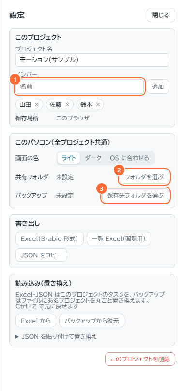
- 選べるのは名前が
dataのフォルダだけです（選び間違いを防ぐため）。 - ブラウザを起動し直したあと、最初に画面をクリックしたときにもう一度だけ許可を求められます。「許可」を選んでください。
- 選ぶと、共有プロジェクトの件数が表示されます。
1-3. 自分の名前を選ぶ
右上の「自分」1で自分の名前を選びます。「自分」を選ぶまで、共有プロジェクトは閲覧のみです（だれが編集中かを表示するために使います）。
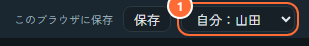
1-4. プロジェクトを開く
左上のプロジェクトのプルダウンから選びます。名前の前に 👥 が付いているのが共有ドライブのプロジェクトです。新しく作るときは、プルダウンのいちばん下の「＋ 新しいプロジェクト」を選びます。
画面はふだん白です。黒い画面がよいときは「設定」→「このパソコン」→「画面の色」で「ダーク」を選びます。
1-5. （おすすめ）バックアップ先を選ぶ
「設定」→「バックアップ」の「保存先フォルダを選ぶ」3で、自分のパソコン上のフォルダを選びます。変更のたびに auto.backup.json が自動で上書き保存され、上部バーの「保存」を押すと、その時点のファイルが日時付きで追加されます。共有ドライブの data の中は選ばないでください。
2. 画面の見方
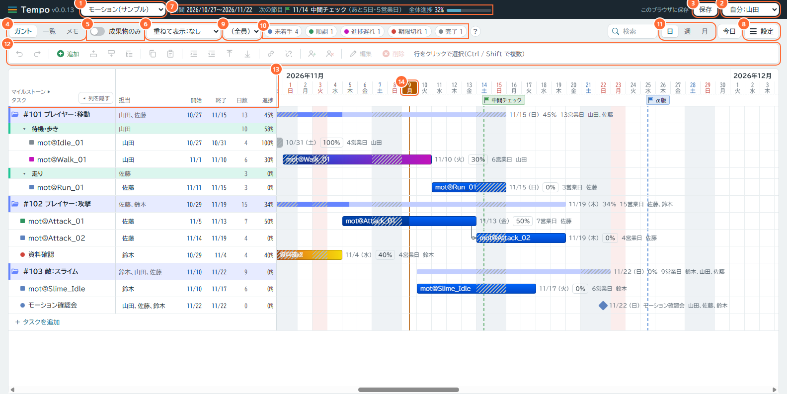
| 番号 | 名前 | はたらき |
|---|---|---|
| 1 | プロジェクト | 開くプロジェクトを選びます（👥 = 共有） |
| 2 | 自分 | 自分の名前（1-3） |
| 3 | 保存 | バックアップ先に、今の状態を日時付きのファイルで保存します。左の文字は保存の状態（「このブラウザに保存」「共有フォルダと同期中」など。保存中は「保存中…」、終わると ✓「保存しました」） |
| 4 | ガント｜一覧｜メモ | ガントチャート、一覧表、メモの切り替え（第 6 章、第 10 章） |
| 5 | 成果物のみ | フォルダと成果物だけを表示（第 6 章） |
| 6 | 重ねて表示 | 別のプロジェクトを下に重ねて見比べます（第 7 章） |
| 7 | 期間・節目・全体進捗 | プロジェクト全体の期間、次のマイルストーンまでの日数、全体の進捗（上部バーのプロジェクト名の右） |
| 8 | 設定 | 名前、メンバー、画面の色、共有フォルダ、バックアップ、Excel などの書き出し・読み込み、プロジェクトの削除（第 1 章）。少し左に検索欄（タスク名で探す） |
| 9 | 担当者で絞り込み | 選んだ人のタスクだけを表示 |
| 10 | 状態ラベル | 押すとその状態のタスクだけを表示（押したラベルは丸が「×」になり、もう一度押すと解除）。右の「?」にマウスを置くと色の意味が出ます |
| 11 | 日｜週｜月 | タイムラインの目盛り。右の「今日」で今日の位置へ |
| 12 | ツールバー | 元に戻す / ＋ 追加・挿入 / コピー / 階層・移動 / リンク / 担当 / 編集・削除。ボタンにマウスを置くと説明が出ます |
| 13 | タスク表 | タスク名・担当・開始・終了・日数（営業日）・進捗。「◂ 列を隠す」でタスク名だけにしてタイムラインを広くできます（「列を表示 ▸」で戻す）。共有プロジェクトでは左上にロックのスイッチ（第 3 章） |
| 14 | タイムライン | バーで日程を表示。オレンジの縦線が今日、灰色の背景が土日、色付きが祝日・会社の休日 |
3. 編集の流れ（共有プロジェクトのロック）
共有プロジェクトは、ふだんは閲覧のみです。同時に 2 人が書き換えないように、編集する人が「ロック」をかけます。スイッチはタスク表の左上にあります。
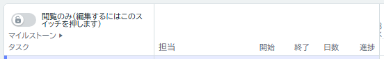
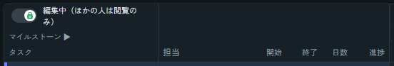
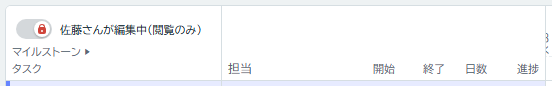
- スイッチを押します。最新の内容を読み込んでからロックし、緑の「編集中」になります。
- 編集します。変更は自動で保存されます。
- 終わったら、もう一度スイッチを押します。2 分間なにも操作しないと自動で解除されます。続けるときはもう一度押してください。
- 相手が解除し忘れて連絡もつかないとき：赤いスイッチを 2 回押すと、相手のロックを強制的に解除できます（最後の手段です）。
- スイッチの横に赤字で「ロックなし」と出たとき：ロックのファイルを作れなかったため、ロックせずに編集しています。編集はできますが、ほかの人も同時に編集できるので、周りに声をかけてください。
- ボタンを押しても何も起こらないときは、たいていロックがかかっていません（閲覧のみ）。
4. タスクの基本操作
基本はクリックで選択、ダブルクリックで編集です。シングルクリックで編集画面が開くことはありません。
| したいこと | 操作 |
|---|---|
| タスクを追加 | ツールバーの緑の「＋」、またはタスク表のいちばん下の「＋ タスクを追加」 |
| 選択 | 行かバーをクリック（Ctrl で複数、Shift で範囲） |
| 詳しく編集 | 行かバーをダブルクリック（または選択して Enter） |
| 日付を変える | バーの中央をドラッグで移動、両端をドラッグで開始日・終了日を変更。親タスクの細いバーをドラッグすると、配下のタスクがまとめて移動します。ドラッグしないなら、右クリック →「日程をずらす」に日数を入れて「ずらす」（マイナスで前へ） |
| 進捗を変える | バーの右の「N%」をダブルクリックしてスライダーで調整 |
| 担当者を決める | タスク表の「担当」をクリックして名前を押す（もう一度押すと外れる。何人でも）。右上の × で閉じます。先に Ctrl / Shift で複数のタスクを選んでおくと、選んだタスクすべてに一度に付きます |
| 順番・階層を変える | 行を約 0.35 秒長押ししてドラッグ（行の上側 = 上へ、下側 = 下へ、中央 = 子タスクに）。または Tab / Shift+Tab |
| 削除 | 選択して Delete を 2 回（ツールバーの「削除」を 2 回でも） |
| 元に戻す | Ctrl+Z（やり直しは Ctrl+Y） |
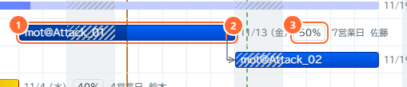
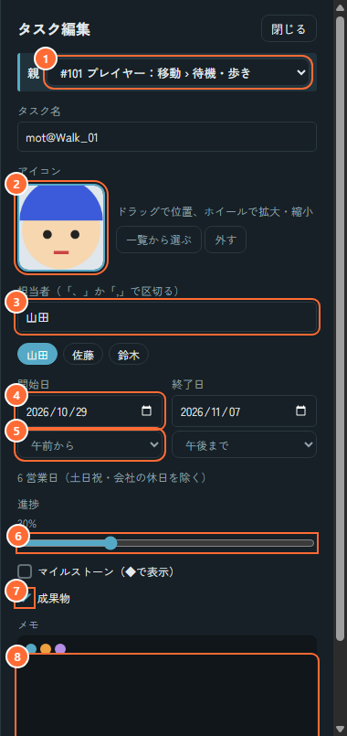
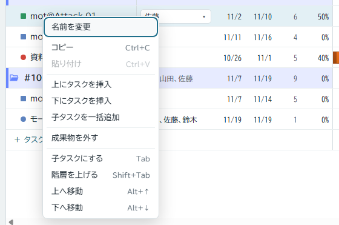
子タスクをまとめて追加：右クリック →「子タスクを一括追加」で、1 行に 1 つ名前を書く（貼り付けもできます）と、まとめて子タスクになります。
親タスク：子タスクを持つタスクです。日付・進捗・担当は子タスクから自動で計算されるので、子タスクのほうを変えてください。階層は 4 段までです。
アイコン
タスク名が ID ばかりで、どのキャラクターか分からないときは、タスクやフォルダの前に画像を付けられます。アイコンは名前の前の丸の代わりに表示され（成果物は四角）、外側の線の色が状態を表します。フォルダのアイコンは 📂 と名前の間に出ます。
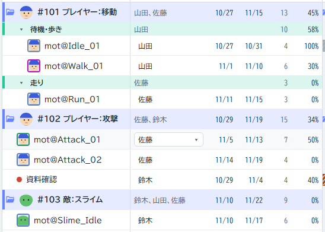
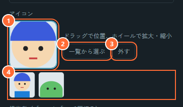
1パソコンの画像をこの枠にドラッグ＆ドロップします（空の枠をクリックしてファイルを選んでも構いません）。画像は共有フォルダに保存され、みんなが使えるようになります。枠の中をドラッグすると丸に映る部分が動き、マウスホイールで拡大・縮小します
2一覧から選ぶ：だれかがすでに入れた画像から選びます。ほかのプロジェクトで使っている画像も選べます
3外す：このタスクからアイコンを外します（画像そのものは残ります）
4入っている画像の一覧。押すとその画像になります
最後に「保存」か右上の「完了」を押します（Esc で閉じても、ほかのタスクを開いても保存されます。戻すときは Ctrl+Z）。
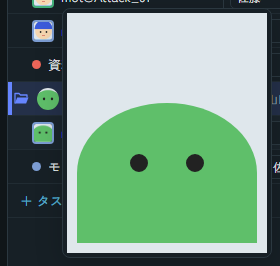
5. 色と状態
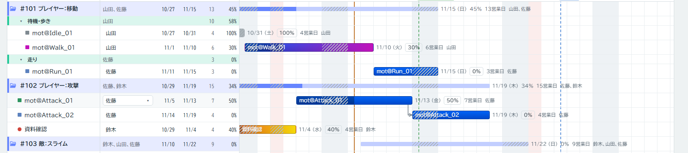
| 名前の左の印・状態 | 意味 | バーの色 |
|---|---|---|
| 完了（灰） | 進捗 100% | 灰色 |
| 未着手（青） | 開始日がまだ来ていない | 青 |
| 順調（緑） | 予定どおり | 青 |
| 進捗遅れ（赤紫） | 経過した日数に対して、進捗が 10 ポイント以上遅れている | 右端が紫 → ピンク（ピンクほど遅れが大きい） |
| 期限切れ（赤） | 終了日を過ぎても終わっていない | 赤 → 黄 |
- 印が丸ではなく四角のタスクは、成果物のタグが付いたタスクです。
- 親タスクは階層ごとに色の帯が付きます（青・青緑・黄）。右クリック →「色」で変えられます。配下のタスクがすべて 100% になると、灰色になります。
- バーの斜線の部分は土日・祝日・会社の休日です（営業日に数えません）。
- ◆ は 1 日だけの節目のタスク（マイルストーン）です。
6. 一覧と成果物のみ
「一覧」を押すと、タイムラインなしの表になります。いちばん下の階層のタスクの「完了」にチェックを入れると進捗 100%、外すと 0% です。親タスクには「1/3」のように完了した数が出ます。「ガント」で元に戻ります。
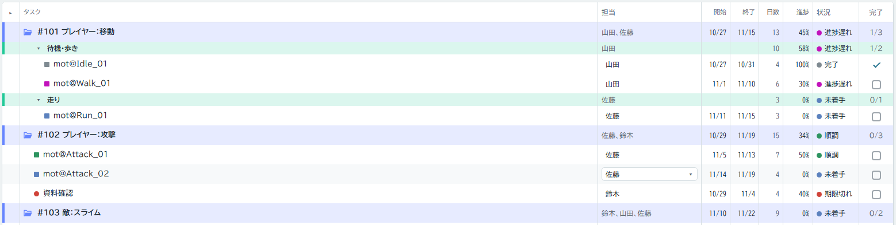
1「成果物のみ」をオンにすると、いちばん上の親タスク（フォルダ）と成果物のタグが付いたタスクだけになります。どこまで進んだかの確認に使います。ガントでも一覧でも使えます。
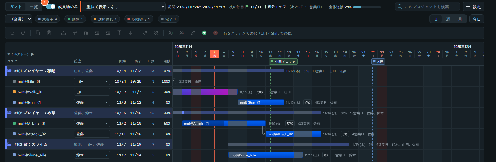
成果物のタグの付け方：タスクを選んで（複数可）右クリック →「成果物にする」。または編集パネルの「成果物」にチェック。子タスクの一括追加では「成果物として追加」に最初からチェックが入っています。
7. 重ねて表示
ほかのチームのプロジェクトを、自分のプロジェクトの下に同じ日付の目盛りで並べて表示します。たとえばモーションのプロジェクトを開いてキャラクターのプロジェクトを重ねると、「リグがまだ終わっていないのにモーションを始める予定になっている」といったずれが見つかります。
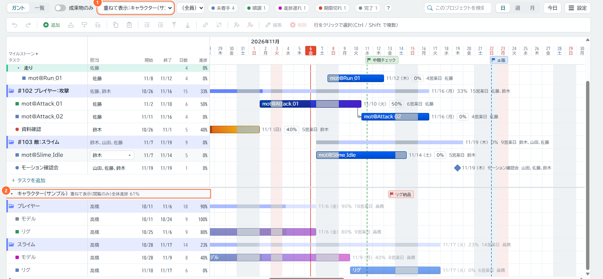
- 画面が上下に分かれ、上が自分のプロジェクト、下が相手のプロジェクトです。上下それぞれ別にスクロールでき、左右（日付）のスクロールは一緒に動きます。境目はドラッグか、クリックして ↑↓ キーで動かせます（ダブルクリックで半分に戻ります）。高さは自分のブラウザに記憶されます。
- 相手のタスクは薄い色で、閲覧のみです（選択・編集・ドラッグはできません）。親タスクは折りたためます。見出しの ▾ で全体を折りたためます。
- 「成果物のみ」をオンにすると、相手も成果物だけになります。担当者の絞り込み、状態ラベル、検索は相手には効きません。
- 自分のプロジェクトの全体進捗や Excel には含まれません。「一覧」では表示されません。
- どれを重ねたかはプロジェクトごとに自分のブラウザに記憶されます。ほかの人の画面には影響しません。「重ねて表示：なし」で元に戻ります。
- 選べるのは、自分のブラウザで開けるプロジェクトだけです。相手のプロジェクトが出てこないときは、相手に「設定」→「共有フォルダへ移動」をしてもらってください。
8. マイルストーンと会社の休日
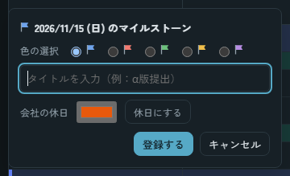
タイムラインの上の日付をクリックすると、この画面が開きます。
- マイルストーン：色を選び、タイトル（例：α版提出）を入れて「登録する」。旗が立ち、上部バーに「次の節目」として残り日数が出ます。旗をクリックすると変更・削除できます。
- 会社の休日：色を選んで「休日にする」。その日は営業日に数えません（日本の祝日は最初から入っています）。もう一度クリックして「休日を解除」で戻ります。
9. Excel とバックアップ
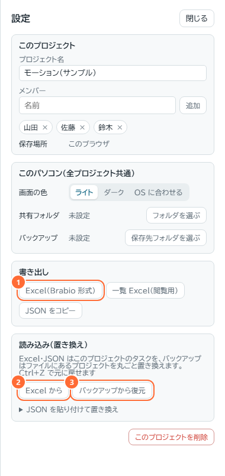
1Excel（Brabio 形式）：「書き出し」のカードで Excel に保存します。「一覧 Excel（閲覧用）」は Tempo を使わない人への報告用です（Tempo には読み込めません）。
2Excel から：「読み込み（置き換え）」のカードで Excel を読み込みます。今のプロジェクトのタスクがすべて置き換わります（間違えたら Ctrl+Z）。メモは変わりません。
3バックアップから復元：バックアップのファイル（.backup.json）を選んで元に戻します。ファイルを Tempo の画面にドラッグ＆ドロップしても復元できます。共有プロジェクトは、ロックして編集中のものだけ復元されます。
バックアップ先の選び方は 1-5 を見てください。
10. メモ（チームの規則）
「ガント｜一覧｜メモ」の「メモ」で、命名ルールや納品チェックなど、チームの規則を書いておくページになります。プロジェクトごとに、Excel のシートのようにページ（タブ）を増やせます。
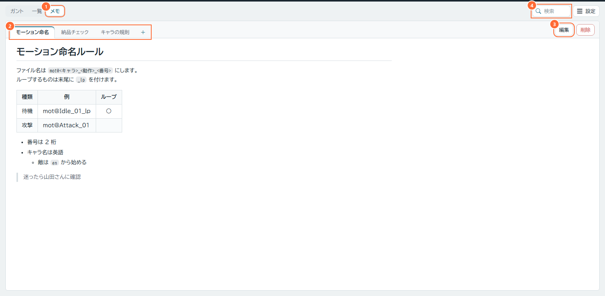
- 書く：ページをダブルクリックするか「編集」。仕上がりの画面でそのまま書き換えられます（チェックボックスもクリックで切り替え）。Markdown の原文は、ボタンの列の右端「Markdown」を押すと左に並びます。上のボタンで見出し（1〜6）・太字・リスト・表（行・列の追加と削除）なども付けられます（最後にカーソルがあった側に効きます）。「完了」（または Esc）で保存。間違えたら Ctrl+Z。
- 書き方：Markdown です。
#見出し、-箇条書き、- [ ]チェックボックス、| 表 |、`コード`、**太字**、>引用、リンク。改行はそのまま改行になります。 - ページ：タブをクリックで切り替え、ダブルクリックで名前を変更、ドラッグで並べ替え。「削除」は 2 回押します。
- 検索：メモを開いているときは、検索欄でメモの中を探します。見つかった所に色が付き、タブに件数が出ます。Enter で次へ。
- 共有プロジェクト：全員が読めます。書くときはタスクと同じく、タブの行の左端のスイッチでロックしてから（第 3 章）。ロックすると、そのまま表示中のページの編集が始まります。
- Excel・JSON の読み込み（置き換え）ではメモは変わりません。バックアップにはメモも入ります。
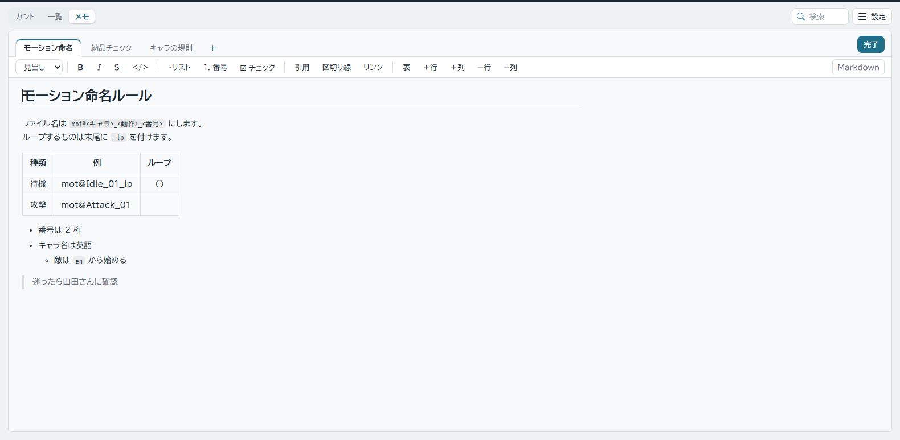
11. 困ったとき
| 困ったこと | 原因と対処 |
|---|---|
| アイコンが表示されない・付けられない | 共有フォルダにつながっていません（1-2）。画面をクリックすると接続を許可するか聞かれることがあります。つながっているのに丸のままのときは、その画像が共有フォルダの data\images\ にありません（消された可能性があります）。アイコンを付け直してください |
| 共有プロジェクトが編集できない・ボタンを押しても何も起こらない | ロックがかかっていません。タスク表の左上のスイッチを押してください。押せないときは「自分」が未選択です（1-3）。赤で「〇〇さんが編集中」なら、終わるのを待ちます |
| 「新しいバージョン … Tempo.bat から開き直してください」と出た | ページを閉じて、Tempo.bat から開き直してください。それまで共有プロジェクトは閲覧のみです |
| 「共有フォルダに接続できません」と出た | 共有ドライブにつながっているか確認してください。その間、共有プロジェクトは閲覧のみです |
| 「未保存の変更があります（再試行中）」が消えない | 保存を自動で再試行しています。ページを閉じずに、共有ドライブへの接続を確認してください。続くときは、メッセージのかっこ内の英語を管理者に伝えます |
| 「フォルダを選ぶ」で data を選べない | 共有ドライブの Tempo.html を直接開いていませんか。Tempo.bat から開いてください |
| 「自分」に自分の名前がない | 名簿に登録されていません。「名前を入力…」で名前を入力し、ロックしてから「設定」→「メンバー」で自分を追加してください（1-3） |
| 親タスクの日付が変えられない | 子タスクから自動計算されます。子タスクの日付を変えてください |
| ドラッグすると文字が選択されてしまう | 行を約 0.35 秒長押ししてからドラッグします |
| 進捗の「N%」をクリックしても反応しない | ダブルクリックです |
| Ctrl+Z で戻せなくなった | ほかの人の変更が届くと、そのプロジェクトの「元に戻す」の履歴は消えます。それより前に戻すには「バックアップから復元」を使います |
| 「重ねて表示」に相手のプロジェクトが出ない | 相手のプロジェクトが相手のブラウザにしかありません。相手に「共有フォルダへ移動」をしてもらってください |
| 不具合を報告したい | 左上の「Tempo」の横のバージョン番号と、共有ドライブの data\logs\ にあるその日の自分の記録（日付_名前.log）を管理者に渡してください。タスク名やメモの内容は記録されていません |
付録：管理者向け
共有ドライブの構成
| 場所 | 内容 |
|---|---|
app\ | Web ページ。新しいバージョンの公開時に丸ごと入れ替わるので、ほかのファイルを置かないでください |
data\projects\ | プロジェクトごとに 1 ファイル（プロジェクト名_ID.json）。直接編集・削除しないでください。バックアップファイルをここへコピーしても読み込まれません（「バックアップから復元」→「共有フォルダへ移動」を使います） |
data\locks\ | 編集ロックの空のファイル。そのままで構いません（古いものは 2 分で無効になります） |
data\images\ | タスクのアイコンの画像（全プロジェクト共通）。ファイル名は Tempo が付けます。タスクから外しても残ります。削除しないでください（ほかのプロジェクトで使っているかもしれません） |
data\logs\ | 操作の記録（1 人 1 日 1 ファイル）。不具合の調査用で、古いものはいつ削除してもかまいません |
Tempo.bat | 起動用。各自が自分のパソコンにコピーして使います |
data フォルダは、名前を変えたり移動したりしないでください。
新しいバージョンの反映
新しいバージョンが app\ に入ると、開いている画面に「新しいバージョンがあります」と表示されます。全員に Tempo.bat から開き直すよう伝えてください。